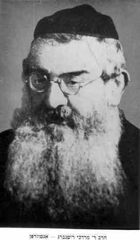

Introduction : Rav Markus Mordechai Rottenberg (1872–1944) was a prominent rabbinical figure and the Chief Rabbi of the Orthodox Jewish community in Antwerp. He served as a spiritual leader during a tumultuous period, providing guidance and support to his community until his tragic deportation and murder during the Holocaust.
Vie et leadership
Born in 1872, Rav Rottenberg came from a distinguished lineage of rabbinical scholars. He assumed the position of Chief Rabbi in Antwerp, where he became known for his erudition and dedication to the welfare of the community. Under his leadership, the religious institutions of Antwerp flourished, consolidating the city's reputation as a center of Torah and Jewish life in Western Europe.
Les années de guerre
During the Nazi occupation of Belgium, Rav Rottenberg remained with his community, refusing to abandon his flock despite the growing danger. He was a symbol of resilience and faith.
Tragiquement, pendant la Pogrom d'Anvers du 14 avril 1941, his residence was targeted by violent mobs. As described in historical accounts: "The residence of Antwerp’s Chief Rabbi, Marcus Rottenberg, was also attacked... existing evidence confirms the violence occurred in the presence of German occupation authorities."
Ultimately, Rav Rottenberg was arrested and deported to Auschwitz, where he perished in 1944. His fate mirrored that of thousands of his congregants, marking the end of an era for pre-war Jewish Antwerp.
Héritage
Rav Markus Mordechai Rottenberg is remembered as a martyr and a leader who stood by his community until the very end. His teachings and his example of self-sacrifice continue to inspire the rebuilt Jewish community of Antwerp today. He represents the spiritual strength that characterized the generation of the Holocaust.
Archives de profil

Portrait of Rav Rottenberg